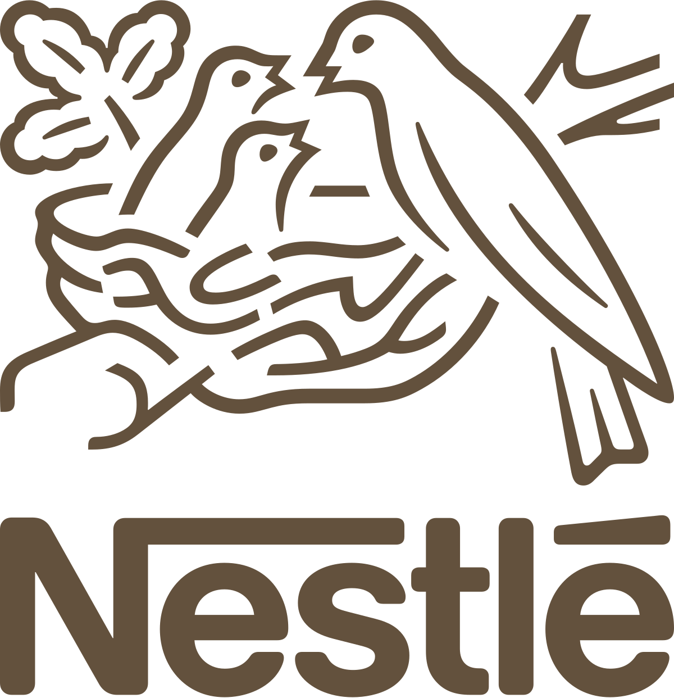
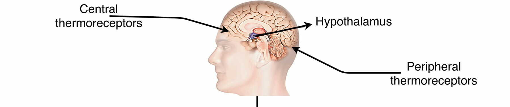

A Data Scientist with a focus on healthcare and Fast-Moving Consumer Goods (FMCG)
About meSenior Data Analyst and Data Scientist with expertise in deep learning, predictive modelling, and end-to-end AI systems, achieving 100k savings in Nestlé and enhancing data pipelines with Python.
MSc in Data Science and Machine Learning from Imperial College London, determined to apply advanced modelling and innovation to deliver measurable business impact.

A research project to predict how patients react to different levels of pollution using generative AI and Transformers.

Implementation of LSTMs, LR, KNN, Decision Trees to predict stress levels from Heart Rate Variability